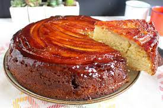

Receita de bolo de banana
Ingrendientes
- 2 xícaras de farinha de trigo
- 2 bananas médias
- 1 xícara de leite
- 1 colher de sopa de manteiga
- 2 ovos
- 1 xícara de açúcar
- 1 colher de fermento
Modo de preparo
- Coloque os ovos, farinha de trigo, açúcar, leite, fermento e a manteiga no liquidificado
- Deixe batendo por 2 minutos, enquanto isso corte as bananas em rodelas pequenas.
- Logo a seguir passe manteiga na forma, não é necessário a farinha de trigo.
- Depois despeje a massa que está no liquidificador dentro da forma.
- Logo após acrescente as rodelas de banana em cima da massa e leve ao forno por 40 minutos.
